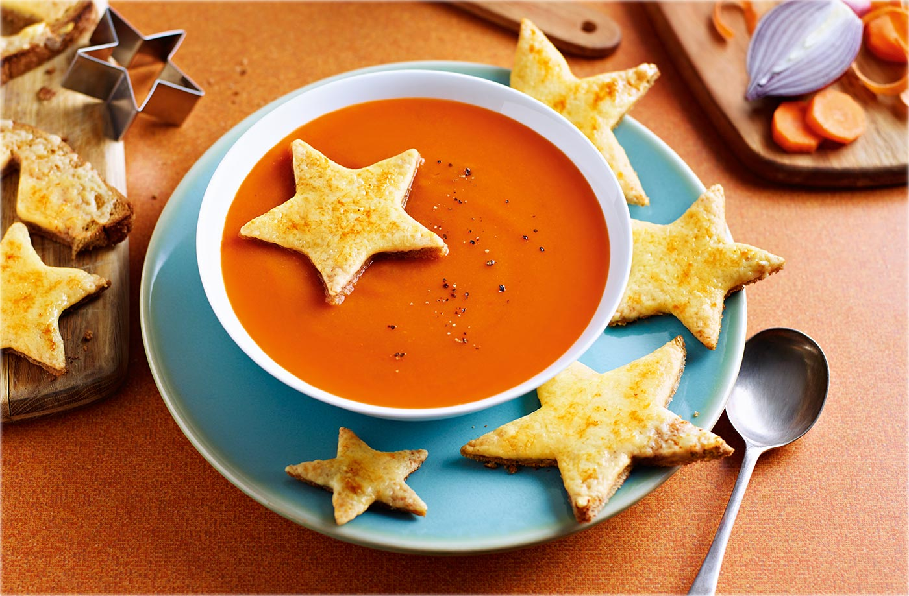

Soup

Beethoven once said Only the pure of heart can make a good soup
. Well, here my attempt at doing just that!
- Step 1:Start with Aromatics
- Step 2:Add Other Vegetables or Meat
- Step 3:Add Liquid
- Step 4:Simmer Your Soup
- Step 5:Finish with Herbs
- Enjoy!
"Aromatics" is just a fancy term for boldly fragrant vegetables. Think onions and garlic. They have a lot of flavor to give, so it's best to start with them so they have time to release all their essence into the soup. You don't need much-start with a small chopped onion and a couple cloves of chopped garlic. Saute both in a little oil just until they begin to release their fragrance and become translucent. If you have a carrot or some celery, chop it up and add that too. Chefs call that mixture a mirepoix, but I like to think of it as a bunch of flavors that work nicely together to create a solid base for your soup.
Here's where you can really get creative and add your choice of vegetables and/or meat to your soup. Practically anything will work. Dig through your produce drawer and see what you've got. A bell pepper? Chop it up and throw it in! A potato Absolutely! The key here is that all the vegetables should be a similar size so they cook at the same rate. And since it's soup, you'll want the pieces to be no bigger than bite size so you're not noshing on huge chunks. Are there any vegetables you shouldn't add? Not really, but tender vegetables, like spinach or even broccoli, with its delicate florets, may not fare well with longer cooking times, so add those at the end when you might add pasta or herbs (more about that later). In terms of amounts, I like to stick to around 4 cups of vegetables for 4 to 6 servings of soup. If you're adding meat, add it now too. Again, chop the pieces up small enough to make them manageable for your mouth. For quicker cooking soups, lean cuts of meat like strip steak, pork loin, chicken breast or thighs are all good choices, as are lean ground meats. Avoid chuck steak, "stew meat," brisket or pork shoulder-all tough cuts that require longer cooking times for them to break down and become tender. And stay away from bacon, prosciutto, pepperoni and other cured meats, which are very high in sodium (and some are also high in fat); they should be considered "flavorings" to be added later. About 12 ounces to 1 pound of meat is good for 4 to 6 servings.
And now we get to the "soup" part of soup, a.k.a. the liquid. Broth is the way to go here. It really comes down to flavor preference, but I choose chicken broth or, if I want an even richer flavor, beef broth. For vegetarians, try "no chicken" broth or vegetable broth. And of course, use homemade broth if you have any stashed away. Pay attention to the sodium content of your broth. "Regular broth" has upward of 700 mg per serving-which is almost half the recommended daily amount if you're watching your salt. So I usually opt for "reduced sodium" broths that come in at about 525 mg per serving. If you only have the high sodium stuff, you can substitute water for half the broth. Start with 4 cups for 4 to 6 servings. Depending on how much vegetables and meat you added, you may need more or less broth. Add enough so everything is submerged by 1/2 to 1 inch of liquid.
How you cook your soup is important. You'll want to simmer your soup, not boil it. Boiling soup too rapidly can cause the vegetables to cook unevenly, while a gentle simmer cooks the vegetables at a steady, even pace. Simmering also allows more flavors to develop and deepen. So how long do you cook it for? It depends. Obviously, you want your meat cooked through and your vegetables tender-which should take 20 to 30 minutes. Use your palate to guide you: try a vegetable or cut into a piece of meat to see where you're at before taking the pot off the heat. If you want quick cooking grains like bulgur or quinoa, add them at the beginning of the simmer so they have time too cook through. If you're using pasta, add it 10 minutes into cooking. Most pasta will take about 10 minutes to cook. And remember, grains and pasta expand, so you don't need a lot-about 1/2 to 1 cup of each for 4 to 6 servings should be plenty.
You're almost done! Taste your soup-make sure you cool down your spoon first! Then adjust the salt and pepper to your taste. Add herbs, dry or fresh, right at the end so they have the greatest impact. If you add them too soon, their delicate aromas will just cook away. Some of my favorites are basil, marjoram and Italian seasoning.